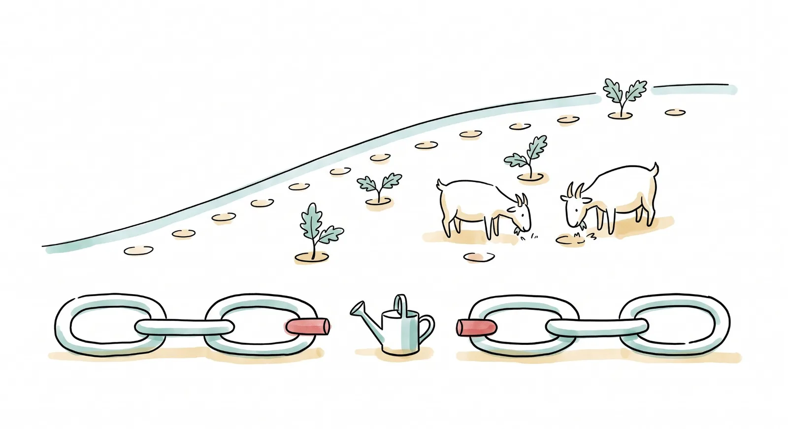
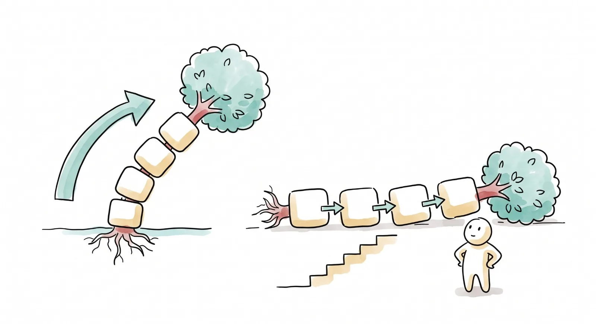
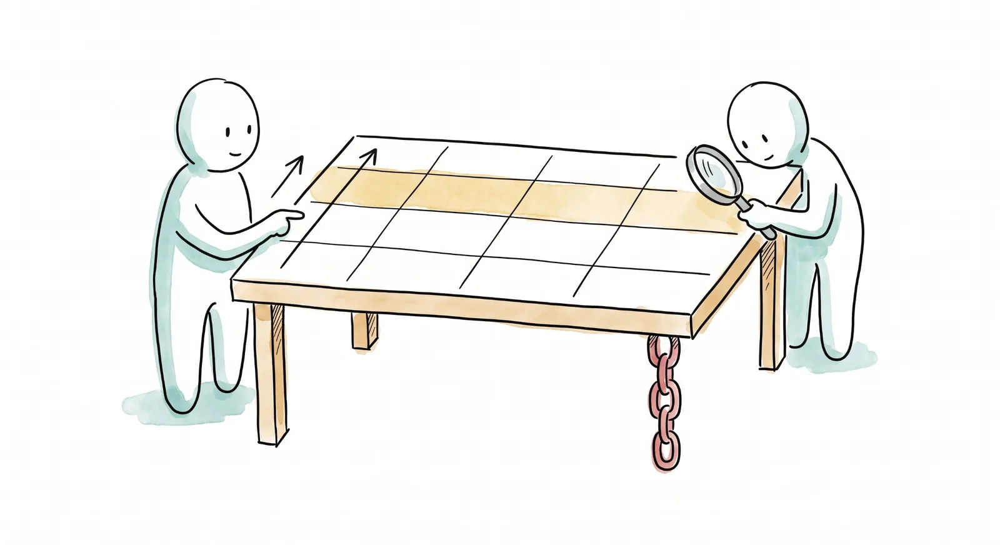
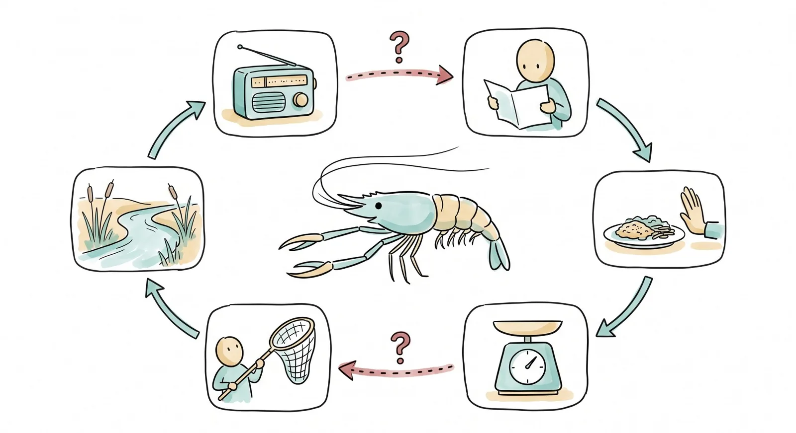

¿Por qué crees que eso va a funcionar?
La semana pasada el árbol de problemas se volteó en árbol de objetivos y quedaron cinco líneas estratégicas con cinco equipos. Desde hoy cada sesión le agrega una pieza al proyecto de tu línea, y la primera es la más honesta: la apuesta. En un vivero de la sierra se entregaron dos mil plantas, se sembraron en faena, y a los dos años quedaban sesenta: la planta era buena y la siembra salió bien, pero entre lo que haces y lo que esperas hay una cadena de pasos que nadie había dibujado. El jueves tu equipo dibuja la suya, eslabón por eslabón, con los supuestos a la vista. El viernes la apuesta se viste de tabla: el marco lógico, con un propósito que aguante la lupa y dos indicadores que se puedan contar sin fe. Y llega el formato de la solicitud, para que desde ahora todo lo que produzcas tenga destino.
Esta semana podrás
- Abrir la carpeta del proyecto de tu equipo y saber qué pieza le toca a cada sesión de aquí a la entrega.
- Ubicar cada piso del árbol de objetivos en la escalera: qué es producto, qué es resultado y qué es impacto, y de cuál responde tu equipo.
- Construir la teoría del cambio de tu línea: si hacemos esto, entonces pasa esto otro, siempre que... incluido el "siempre que" que apunta a la comunidad.
- Traducir esa cadena a un marco lógico exprés: propósito, productos, actividades, dos indicadores con línea base, verificación y supuestos.
- Cotejar tu marco contra el de una IA y cazarle las fallas con criterio propio.
- Leer el Anexo 1 y ver que las piezas que ya tienes caen en sus secciones.
Las dos sesiones de esta semana
Cada día es un mazo de láminas: en clase se proyectan una por una con el botón Presentar, y aquí se quedan, en orden, para volver a ellas cuando quieras. Esta semana trae más de lo que cabe en dos horas a propósito: los minutos son una estimación, y el profesor elige y se brinca sobre la marcha. Lo que no se brinca el jueves: el vivero, la cadena en kraft y el reto 1. Lo que no se brinca el viernes: el marco por equipo y el Anexo 1.
Del árbol a la cadena
Abrir la carpeta del proyecto, poner cada piso del árbol en su escalón y armar la teoría del cambio de cada línea con sus supuestos a la vista.
1 El ticket de la semana pasada 5 min
Al aireLo que el viernes quedó turbio de las reglas, hoy se contesta con el documento en la mano.
Este arranque no se salta ningún jueves. Si lo turbio fue una cláusula, se lee la cláusula; si fue una pregunta que las reglas no contestan, se dice quién la sabe y quién va a ir a preguntarle. Y hay un aviso de la Coordinación: el calendario de las reglas se fechó por semanas del curso, con el mismo orden de siempre. Se lee textual.
Traer dos o tres tickets textuales. Si alguno pide "que nos expliquen las reglas", contestar con la página del documento, no con la explicación. Leer el aviso del calendario (cláusula 7, versión del 1 de octubre) y decir en voz alta la fecha de la entrega y la de la defensa.
2 La campana del no 10 min
Ritual · cada jueves¿Quién pidió esta semana?
Un no conseguido se anuncia, suena la campana, el grupo aplaude y el no se anota en el anti-currículum. Los síes también se cuentan. Desde esta semana las peticiones empiezan a tener nombre de línea: el dato del vivero, la cita con la delegación, el precio de la malla. Pedir una cotización también es pedir.
Cerrar el pendiente del suelo de la unidad 1 en una línea: quien todavía deba primer no o reporte lo resuelve con el profesor al final. No se vuelve a mencionar en el salón.
3 Los cinco equipos y la carpeta del proyecto 10 min
Desde hoy, cada sesión le agrega una pieza al proyecto de tu línea. Todas viven en una sola carpeta.
| Semana | Jueves | Viernes | Lo que entra a la carpeta |
|---|---|---|---|
| 6 | La teoría del cambio | El marco lógico | Pestañas 2 y 3 · retos 1 y 2 |
| 7 | Bocetos y ubicación | Plan de actividades y cronograma | Pestañas 4, 5 y 8 · reto 5 |
| 8 | Presupuesto y cotizaciones | Actores, trato y contrapartida | Pestañas 6 y 7 · retos 4 y 3 |
| 9 | El Anexo 1, sección por sección | El mismo proyecto en el formato del PROCODES | Pestaña 9 · la solicitud armada |
| 10 | El pitch y la Troika | La entrega, a las 14:00 | Pestaña 8 · el pitch, y la carpeta final |
| 11 | La defensa ante Mayra | El fallo y el cierre de la unidad |
La carpeta del proyecto es una página por equipo, con una pestaña por pieza, que se llena en una sola laptop, se guarda en ese navegador y se descarga como archivo. De ahí sale la solicitud al Fondo, y después la misma solicitud en el formato del PROCODES. Y la bitácora de equipo abre hoy: una entrada por semana, por turnos, con la letra de quien la escribe. Es casilla del suelo de esta unidad.
Abrir la carpeta en el proyector y enseñar las nueve pestañas sin llenar ninguna. Acordar en cada equipo qué laptop la carga y quién hace el respaldo (descargar el archivo al Drive del equipo al final de cada viernes). Los nombres de los integrantes van a la carpeta y a la bitácora, no a la página del curso. Mapa del tiempo del jueves, por si aprieta: el encino y la tabla de Serrat se pueden dejar a los gimnasios 7 y 9 como tarea; las tres cadenas de la carrera se hacen solo con el potrero en plenaria; los tres recorridos de la cadena se dicen en una frase. El vivero, el árbol acostado, la cadena de la línea 1, el kraft y el reto 1 no se tocan.
4 El vivero de las dos mil plantas 10 min
Se entregaron dos mil plantas de encino y nogal. Se sembraron en faena, en la lluvia, con foto. A los dos años quedaban sesenta.
Es un caso que se repite en la sierra con distintos nombres, y por eso se cuenta sin pueblo: un programa entrega la planta, el vivero la produce bien, la comunidad hace la faena, el informe dice "2,000 plantas sembradas" y se celebra. Dos secas después, el cerro está igual. ¿Qué pasó? Antes de leer la respuesta, apúntala en la bitácora: el cerro es de por acá y la planta es la que tu línea quiere sembrar.
Parar aquí y pedir hipótesis en voz alta, dos o tres, antes de pasar a la lámina siguiente. Las que digan "la planta era mala" o "no llovió" son las que la lámina desmonta. Este bloque no se recorta.
La cadena que se celebró, y el eslabón que nadie dibujó.
La planta era buena y llovió normal. Lo que faltó fue el eslabón 3: nadie quedó a cargo de regar en la primera seca ni de cuidar que el ganado no las pisara, porque ese eslabón no estaba en el proyecto. Los dos primeros son productos, y el proyecto respondió por ellos completo. El tercero es una conducta de alguien de fuera del proyecto: si se planea, es un eslabón con dueño; si no se planea, es un supuesto, y el vivero ni siquiera lo escribió. El cuarto es un resultado, y nadie le apostó por escrito. Esta semana se trata de escribir todos los "entonces" de tu línea, sobre todo el que preferirías que no existiera, y de decir quién lo tiene que hacer.

Escribe el eslabón 3 de tu línea: ¿qué tendría que hacer alguien, que no está en tu cronograma, para que lo que entregues sirva?
Dos líneas. Las plantas que nadie riega, el bote que se vuelve basurero, las sillas que se llevan, el juego que nadie repone, el grupo de cuidado que se junta una vez y ya. Esa línea es tu eslabón frágil, y hoy se dibuja.
5 El árbol de objetivos, en limpio 10 min
De aquí sale todo lo demás. Las cajas en otro color siguen siendo hipótesis, y así se van a declarar en la solicitud.
Cada equipo lee su columna en voz alta: el medio principal, sus medios del medio, y el supuesto que apunta a la línea 2. Lo que la consulta respaldó con tarjeta se queda en su color; lo que fue hipótesis del salón se queda en el suyo, y la solicitud lo va a declarar como supuesto y como riesgo, que es lo honesto. La visita a la orilla del viernes 13 de noviembre es la primera oportunidad de confirmar algunas con la gente enfrente.
Si el muro del grupo difiere de esta lámina, manda el muro. La caja más honda, de quién es la orilla y quién firma, es la que la anuencia va a contestar: se pide por oficio desde la semana 8 y en persona el 13 de noviembre.
6 La escalera 20 min
La trampa vive entre el tercer y el cuarto escalón. "Cincuenta productores capacitados en tres talleres" es un producto; "seis meses después, treinta familias usan la técnica" es un resultado, y son cosas distintas que los proyectos flojos reportan como si fueran la misma. Regla de responsabilidad: de tus productos respondes completo, a tus resultados les apuestas, al impacto solo contribuyes. Quien promete impacto directo está vendiendo humo, y los dictaminadores lo huelen.
El árbol y la escalera son el mismo dibujo visto de lado. Cada piso del árbol vive en un escalón.
| Piso del árbol de objetivos | Escalón | Con la línea 1, reforestación | Quién responde |
|---|---|---|---|
| Lo que se compra y se hace para llegar al medio del medio | Insumos y actividades | Las plantas del vivero, los cajetes, la faena de siembra con la gente del pueblo | El equipo, completo: o se hizo o no se hizo |
| Medio del medio · lo que hay que lograr antes | Producto | 40 plantas nativas sembradas con cajete en las dos zonas erosionadas, el día de la faena | El equipo, completo: se cuentan ese día |
| El eslabón 3 · la conducta de alguien de fuera | Resultado intermedio | Alguien riega en la seca: 30 de las 40 siguen vivas a los tres meses | El grupo de cuidado (línea 2); el equipo lo vigila como señal temprana |
| Medio principal · la línea estratégica | Resultado | Hay sombra donde la gente se junta, y la gente se junta ahí por las tardes | El equipo le apuesta: la gente decide |
| Objetivo central · el de todos | Resultado del proyecto entero | La gente usa la orilla como espacio público: se queda, convive, se divierte | Los cinco equipos juntos le apuestan |
| Fines · las ramas volteadas | Impacto | El humedal se restaura y vuelve la avifauna; el tejido social se fortalece; hay derrama | Nadie lo promete: se contribuye |
Por eso los fines del árbol siguen en la lámina sin tarjeta y sin que nadie los firme: el tejido social, la derrama y la avifauna son impacto, y un proyecto de un semestre contribuye a ellos. Lo que sí se promete son los productos, y a lo que se le apuesta, con la apuesta escrita, es al resultado: la gente haciendo algo distinto en la orilla. La prueba del escalón cuatro es siempre la misma: ¿aparece alguien haciendo algo que antes no hacía?
Pedir que cada equipo ponga su medio principal y su medio del medio en la tabla, en voz alta. El error esperable es poner el producto en el escalón del resultado ("hay botes" como resultado); corregirlo con la prueba: ¿quién está haciendo qué distinto?
El árbol acostado: tu columna del árbol, puesta de lado, es la cadena; y la escalera es el mismo piso visto desde abajo.
No son tres herramientas: es una, en tres posturas. El árbol se lee de abajo arriba con "si logramos esto, entonces"; acostado, cada caja es un eslabón y cada flecha un "entonces"; y la escalera le pone nombre al piso de cada eslabón para saber de cuál respondes, a cuál le apuestas y a cuál solo contribuyes. Lo que la cadena agrega al árbol son los "siempre que": lo que tiene que ser cierto, fuera de tu control, entre una caja y la siguiente. El vivero los tenía y nadie los escribió.

Si se cumple X, entonces Y. Una teoría del cambio es una fila de hipótesis, y la Y de una es la X de la siguiente.
El ejemplo clásico de la sierra: para conservar el encino, una campaña de educación ambiental. Suena bien hasta que se dibuja: entre la campaña y el bosque hay cinco "entonces", y el proyecto solo controla el primero. Que la gente sepa más no conserva un árbol; que quiera tampoco; algo tiene que cambiar en lo que la gente hace (comprar menos carbón) para que baje la amenaza (los hornos) y entonces sí, el bosque. El gimnasio 7 arma esta cadena eslabón por eslabón: en cada uno preguntas si ya llegaste al bosque, y la respuesta es no hasta el final.
Hacerlo en vivo con el gimnasio proyectado, botón por botón, preguntando al grupo "¿ya se conservó el bosque?" en cada eslabón. La discusión buena está en el tercero: ¿qué tendría que hacer la gente? Ahí casi siempre alguien dice "comprar gas", y eso abre el tema del supuesto (que el gas llegue y se pueda pagar).
Hasta dónde responde un proyecto. La escalera dice de qué rindes cuentas y a qué contribuyes.
| Piso | Qué es | Responsabilidad del proyecto | Grado de control | Qué tan difícil es medirlo |
|---|---|---|---|---|
| Impacto | El cambio de largo plazo: poblaciones sanas de acamaya, el bosque de encino, el humedal de la presa | Es con lo que se espera que el proyecto contribuya; casi nunca lo logra solo | Mínimo | Máxima |
| Resultado (outcome) | El cambio en lo que la gente hace: treinta familias manejan sus residuos con la técnica seis meses después | Es lo que se espera que el proyecto consiga: el objetivo | Parcial | Alta |
| Productos (outputs) | Lo contable que dejan las actividades: cincuenta productores capacitados, diez lombricarios habilitados | Está bajo control del proyecto, y por eso rinde cuentas de ello completo | Total | Baja |
| Actividades | Lo que se hace: diseñar las sesiones, gestionar el espacio, dar los talleres | |||
| Insumos | Lo que se mete: equipo, viáticos, materiales |
Es la tabla de responsabilidad que Serrat publicó en 2009 y que las agencias usan para no prometer de más: mientras más arriba, menos control y más difícil medir. Por eso el fin del árbol no se firma, el propósito se apuesta con indicador, y los productos se entregan o no se entregan. Un proyecto que promete impacto directo está prometiendo lo que no controla; uno que solo reporta productos está celebrando que dijo "bu" sin preguntarse si alguien se asustó.
La misma cadena se recorre tres veces: para planear, para ejecutar y para evaluar.
Se planea de atrás hacia adelante: de la visión se baja a los resultados, de los resultados a los productos que los producen, y de ahí a las actividades y a lo que hay que comprar. Se ejecuta en el sentido contrario, eslabón por eslabón. Y se evalúa midiendo cada eslabón, no solo el último: si el bosque no se conservó, hay que poder decir en qué flecha se rompió. Por eso el marco de mañana le pone un indicador a cada renglón, y por eso la unidad 4 va a volver a esta cadena con la hoja de conteo en la mano.
Gimnasio 1: ocho enunciados de proyectos de por acá. Cada uno a su escalón.
Con el ejercicio del gimnasio proyectado, o con el gimnasio 9, que trae diez frases de bebederos, conservas de nopal, nopal verdulero y lombricarios. Parece fácil hasta que deja de serlo: la trampa favorita del género es el producto vestido de logro. La prueba del resultado: ¿aparece alguien haciendo algo que antes no hacía?
Detenerse en el enunciado que más gente subió de escalón: casi siempre es el de la obra entregada leída como cambio. Conectar con la ficha de agosto: sentarse, quedarse, volver son resultados; las sillas puestas son producto.
7 La cadena de cambios, o teoría del cambio 10 min
El manual de Acción sin Daño la llama cadena de cambios; los formatos grandes la llaman teoría del cambio; aquí, cadena de resultados. Es la misma apuesta con tres nombres, y es tu columna del árbol de objetivos acostada y estirada: del medio del medio al medio, del medio al objetivo, del objetivo al fin, con cada flecha dicha en voz alta. Cada flecha es un "entonces" que alguien puede cuestionar; mejor que lo cuestiones tú primero. Y entre flecha y flecha, el supuesto: lo que tiene que ser cierto, fuera de tu control, para que la flecha funcione. Los que el equipo puede verificar en campo (la temporada de agua, qué aguanta pisoteo) se marcan como técnicos y se van a verificar el 13 de noviembre.
La cadena de la línea 1, completa, para ver cómo suena una. Se lee de arriba abajo, y entre eslabón y eslabón va lo que tiene que ser cierto.
Fíjate en tres cosas. El eslabón frágil es el riego de la seca (en rojo), y su señal temprana se puede ver en dos semanas: cuántos cajetes están húmedos un martes cualquiera. El supuesto más incómodo no depende del equipo: depende de que la comunidad cuide, que es la línea 2, y por eso las cinco cadenas van a tener un "siempre que" que apunta al mismo equipo. Y el último eslabón conecta con la consulta: la sombra fue tarjeta tres veces, y "para convivir con la familia" fue tarjeta de lado.
Leerla en voz alta de arriba abajo, flecha por flecha, y pedir que alguien la cuestione en cada "entonces". Es un ejemplo, no la cadena del equipo de reforestación: ese equipo la reescribe con lo suyo, y puede salir distinta.
Tres cadenas de tu carrera. En las tres, el eslabón que se rompe es el mismo: el que va de entregar a que lo usen.
| El proyecto | Lo que se entrega (producto) | El eslabón que nadie dibuja | Lo que se espera (resultado) | El "siempre que" honesto |
|---|---|---|---|---|
| El potrero que se recupera | Cerco eléctrico en doce ranchos y un taller de pastoreo rotativo | Alguien mueve el ganado cada semana | El pasto descansa y en la seca hay forraje propio | Que en cada rancho haya quien lo mueva, y le convenga |
| La composta de la escuela | Tres composteras y dos grupos capacitados | Alguien lleva los residuos cada día | 400 kilos de composta y un huerto sin fertilizante comprado | Que el turno tenga nombre y la dirección lo sostenga |
| Las plagas del valle (el árbol de la semana 5) | Cuarenta productores capacitados en manejo integrado | Quince deciden probar en una parte de su parcela | Menos aplicaciones de insecticida en esas parcelas | Que la alternativa cueste igual o menos y haya quien la venda |
Fíjate en la columna del medio: nunca es una obra ni un taller. Es una persona haciendo algo cada semana, cada día o una vez, que el proyecto no controla. Y fíjate en la última: el supuesto honesto nunca dice "que les interese" ni "que el equipo trabaje bien"; dice algo concreto, fuera de tu control, que se puede verificar en la primera semana.
Acomoda las tres cadenas con las tarjetas revueltas, encuentra el eslabón que se rompe y elige el "siempre que" que lo sostiene.
Con el gimnasio 8 en el celular o proyectado. Cada caso avisa cuando la cadena está derecha, señala el eslabón que nadie dibujó y ofrece tres "siempre que": dos son chamba del equipo disfrazada de supuesto. Es el calentamiento antes del kraft.
Si el tiempo aprieta, hacer el caso del potrero en plenaria y dejar los otros dos de tarea. Al terminar, preguntar cuál de los tres se parece más a la línea de cada equipo: casi todos se parecen al vivero.
La punta de cada cadena: a qué conducta llega cada línea, y con qué voz de la consulta se conecta.
| Línea | Último eslabón propio (resultado) | La voz que lo pidió | El "siempre que" que apunta a la línea 2 |
|---|---|---|---|
| 1 · Reforestación | La gente se junta bajo la sombra nueva por las tardes | "Un árbol grande", "no hay sombra" (3 tarjetas, taller zona 2) | Alguien riega en la seca |
| 2 · Participación | Hay un grupo de vecinos con acuerdo escrito de quién cuida la orilla, cómo y cuándo, y cumple su primer turno | Preguntas 20 y 21: quién cuidaría, faenas | Es la línea misma: su supuesto es que quien firma reconozca al grupo |
| 3 · Recreación | Niños y jóvenes de distintas edades juegan en la orilla, lejos del agua, más de veinte minutos; lo del agua espera el dato | Columpios, juegos, muelle, kayak, pesca (15 tarjetas) | Alguien repone y vigila lo que se ponga |
| 4 · Seguro y limpio | La basura del lunes baja respecto del conteo de agosto, y la gente usa el camino abierto | Botes (5 tarjetas), vigilancia (2 de la canasta), monte y espinas (5) | Alguien vacía los botes y recorre el camino |
| 5 · Convivencia y descanso | Familias sentadas, comiendo y platicando más minutos que en la ficha de agosto | "Nos sentamos en la piedra porque no hay dónde" (10 tarjetas) | Alguien cuida lo que se ponga para que dure |
La última columna es la que amarra el proyecto: cuatro cadenas dependen del mismo supuesto, y ese supuesto es el resultado de la quinta. Mañana esto se vuelve una columna de la tabla del marco; en la semana 8, la razón de que el trato con la comunidad sea el reto 3.
8 Gimnasio 2 · La cadena rota 10 min
Actividad · en parejasSeis apuestas causales. Cinco traen una falla escondida; una se salva.
Con el ejercicio del gimnasio proyectado. Las cuatro fallas de esta semana: el brinco de eslabón (de la actividad al milagro sin pasos intermedios), el producto disfrazado (entregar algo no es que lo usen), el supuesto heroico (la flecha depende de algo improbable o de nadie) y la grandilocuencia (prometer el escalón que no te toca). Es el mismo ojo clínico que mañana se usa contra la IA, y en la semana 11 a tu favor.
9 La cadena de tu línea, en kraft y en la carpeta 25 min
Actividad · por equipoDel problema al objetivo de todos, mínimo tres eslabones, un supuesto por flecha, el que apunta a la línea 2 incluido, y el eslabón que más te preocupa señalado.
En papel kraft, con la columna de tu línea en el árbol a la mano. A la izquierda el problema con su evidencia de consulta; luego la estrategia, en cosas que se pueden contar y fechar; luego los "entonces", con la prueba de cada uno (¿aparece la gente haciendo algo distinto?); entre flecha y flecha el "siempre que", incluido el incómodo; al final el objetivo de todos y, aparte, el fin al que se contribuye. Lo que quede en el kraft se pasa a la pestaña 2 de la carpeta del proyecto. El gimnasio 3 es tu versión personal de bolsillo: te obliga a poder decir la apuesta completa sin ver el kraft, que es lo que el pitch te va a pedir.
Rondar con las cuatro fallas del gimnasio 2 como lente y señalarlas sin resolverlas. Pedir que el eslabón frágil quede marcado con una señal temprana ("si en la primera semana nadie se sienta, la apuesta se está rompiendo aquí"). Al equipo de la línea 2, la pregunta inversa: ¿qué le piden las otras cuatro cadenas, y cabe en la suya?
La plantilla del kraft: así se acomoda, con las tarjetas del árbol y los huecos que hoy se llenan.
Mínimo tres eslabones entre la estrategia y el objetivo, un "siempre que" por flecha, y el eslabón frágil marcado con un color y su señal temprana escrita al margen: qué verías en la primera semana si se está rompiendo. Lo que esté en rojo en tu kraft es lo que la semana 7 convierte en riesgo y la semana 8 en estrategia de contrapartida.
10 El reto 1, explicado 5 min
Es el primer reto de la unidad 2 y va directo al expediente. Los criterios se publican hoy, no después: eslabones concretos (se puede ver si pasaron o no), sin brincos (ninguna flecha del taller al milagro), supuestos honestos (los "siempre que" incómodos incluidos, el de la línea 2 entre ellos) y la punta conectada a la consulta (tu último eslabón propio responde a lo que la gente pidió y se ubica en su escalón). La versión que se dictamina es la del lunes: foto del kraft al Drive, la pestaña 2 de la carpeta llena, y la apuesta en una frase en el cuadernillo 2. Si sale "aún no", trae escrito el porqué, y se reintenta las veces que haga falta. El registro de intentos, con fechas, es la hoja de retos del cuadernillo 2.
La tabla que traduce
Pasar la cadena a marco lógico exprés, afinar el propósito con las cinco pruebas, elegir dos indicadores que cualquiera pueda contar, cotejarlo contra la IA, y recibir el Anexo 1.
1 La tabla es un traductor 10 min
El marco lógico tiene mala fama y la tiene ganada: se ha usado como trámite hueco millones de veces. Bien entendido es otra cosa: tu cadena de ayer acomodada en cuatro renglones, y al lado tres columnas que la vuelven auditable: cómo se mide, dónde se verifica, qué se supone. Un desconocido con tu tabla enfrente puede auditar tu proyecto sin conocerte, y eso es exactamente lo que va a pasar en la semana 11. La versión exprés de este curso cabe en una hoja; los marcos de veinte hojas se dejan para cuando alguien los pague.
Mapa del tiempo del viernes, por si aprieta: la acamaya se deja al gimnasio 10 como tarea y el duelo baja a quince minutos con dos equipos en plenaria y los otros tres cotejando en su mesa. El objetivo en la lupa, el marco por equipo y el Anexo 1 no se tocan.
Las dos lógicas de la tabla: hacia arriba es la cadena de ayer; hacia la derecha es cómo vas a demostrar cada eslabón.
La primera columna, leída de abajo arriba, es tu cadena: hago actividades, entrego productos, logro el propósito, contribuyo al fin. Cada renglón, leído de izquierda a derecha, es la prueba de ese eslabón: qué pasa, con qué número lo sabremos, en qué documento constará, y qué tiene que ser cierto para subir al renglón de arriba. El zigzag rojo es la prueba más útil de la tabla: productos más supuesto tienen que dar propósito. Si en el potrero sumas "48 potreros cercados" más "alguien mueve el ganado" y no te da "los ranchos rotan", es que falta un eslabón, o el supuesto está mal puesto.
Leer el renglón del propósito en voz alta de izquierda a derecha, y luego la columna 1 de abajo arriba. Preguntar: ¿dónde estaría en esta tabla el eslabón 3 del vivero? (En el supuesto de productos. Y si no está, el marco es el del informe que celebró las dos mil plantas.)

2 El objetivo en la lupa 15 min
Actividad · todo el grupo, en vivo"Mejorar la orilla" no es un objetivo: es un deseo con verbo.
Las cinco pruebas lo van afinando, letra por letra y en el pizarrón: específico (¿qué de la orilla?), medible (¿cuánto y desde cuánto?), alcanzable (¿con este equipo, este dinero, este semestre?), relevante (¿responde a lo que la consulta pidió o a lo que se te ocurrió?) y con tiempo (¿para cuándo?). Se reescribe después de cada prueba que repruebe, hasta que quede uno que un dictaminador no pueda rebotar. Así se ve el camino, casi siempre en cuatro pasos:
| Versión | Lo que dice | Qué prueba reprueba |
|---|---|---|
| 1 | "Mejorar la orilla de la presa." | Específico |
| 2 | "Habilitar un área de sombra en la zona 2." | Relevante |
| 3 | "Que la gente use la zona 2 por las tardes." | Medible |
| 4 | "Que cuarenta personas estén sentadas en la zona 2 los domingos de cuatro a seis." | Alcanzable |
| 5 | "Que al menos doce personas estén sentadas en la zona 2 los domingos de cuatro a seis, en la segunda temporada, desde cuatro en agosto." | Pasa las cinco |
La versión 2 es la trampa de siempre: es específica, pero es una obra, no un cambio en la gente (eso lo pide la prueba de relevante: ¿responde a lo que la consulta pidió, o a lo que se te ocurrió construir?). La 3 ya habla de gente, pero no se puede contar. La 4 ya se cuenta, pero cuarenta desde cuatro es un deseo: la prueba de lo alcanzable se hace con la línea base en la mano y con el dinero y las manos que son. La 5 trae quién, cuántos, dónde, cuándo y desde cuánto. Luego, con el gimnasio 4 proyectado, siete objetivos como los que llegan a las convocatorias de verdad: cada uno reprueba una prueba, y a uno le falta casi todo.
Empezar con "mejorar la orilla de la presa" y dejar que el grupo lo vaya cerrando: el punto es ver cuántas reescrituras hacen falta (casi siempre cuatro). El "desde cuánto" es la línea base, y la tenemos: los conteos de la ficha de observación de agosto. Decirlo hoy y volver a decirlo en el bloque 4.
3 Propósito no es producto 5 min
El propósito es el renglón más importante de la tabla y el que más se escribe mal. Prueba rápida: si tu propósito se puede cumplir con puro dinero y sin que nadie cambie de conducta ("instalar las mesas"), no es propósito: es producto disfrazado de cambio. El propósito habla de gente haciendo algo distinto: las familias que vuelven por las tardes, los niños que llegan solos. Es tu medio principal del árbol, el de ayer, dicho con número y fecha.
4 Dos indicadores, no veinte 10 min
Uno de producto: ¿entregaste lo que dijiste? Uno de resultado: ¿la gente hace algo distinto?
Cada uno con número, fecha y línea base, y con tres metas en lugar de una: el piso (lo mínimo digno), lo esperado y el techo (lo mejor que honestamente puede pasar). Poner los tres por escrito te protege del optimismo y le da al dictamen algo serio que leer; prometer solo el techo es la receta clásica del incumplimiento. Veinte indicadores que nadie va a medir valen menos que dos que sí.
Dos plantillas bastan para casi todo. Para el producto: "número de [cosas] que han sido [entregadas o hechas] durante [el periodo]": 40 plantas sembradas con cajete el día de la faena. Para el resultado: "porcentaje o número de [personas] que [hacen algo distinto] para [la fecha]": 9 de 12 ranchos rotan su ganado cada semana en marzo. Si tu indicador no cabe en ninguna de las dos, le falta el número, la gente o la fecha.
| Indicador | ¿Se puede leer sin explicación? | Por qué |
|---|---|---|
| Personas sentadas en la zona los domingos de cuatro a seis; línea base: cuatro, conteo de agosto. | Sí | Cualquiera puede contarlo con una hoja y un lápiz, y ya sabemos desde dónde partimos. |
| Mujeres por cada diez personas en el sitio; mezcla de edades; quién recoge basura que no es suya. | Sí | Son los indicadores que la gente que estudia plazas usa desde hace décadas: dicen si un lugar es de todos o solo de algunos, y se cuentan a simple vista. |
| "El 80% de los usuarios reportará satisfacción con el espacio." | No | Nadie va a levantar esa encuesta, el 80 salió de la nada y "satisfacción" no es una conducta. |
El manual de Acción sin Daño pide indicadores de cambio y preguntas guía; el placemaking pide indicadores que cualquiera lea. Juntarlos en una frase: si tu indicador necesita un especialista para contarse, no es tuyo. La línea base ya existe: la ficha de agosto, área por área. Usarla, no inventarla. La misma hoja se vuelve a levantar en la semana 15.
La acamaya de la Huasteca: a cada eslabón de la cadena, el indicador que diría si pasó. Y las dos flechas que dan miedo.
| Eslabón | Indicador | Cómo se levanta |
|---|---|---|
| Más conocimiento sobre los macroinvertebrados del río | Porcentaje de la población objetivo que cita dos beneficios de la acamaya en el río | Preguntando: alguien tiene que salir a levantarlo |
| Los pobladores prefieren no comer acamaya en veda | Porcentaje que dice que ya no la come en veda | Preguntando, y lo dicho no siempre es lo hecho |
| Decrece la demanda | Kilos de acamaya vendidos en los restaurantes | Contando: más barato y más honesto |
| Se reduce la pesca en los meses críticos | Kilos extraídos por los pescadores en esos meses | Contando, si los pescadores lo dicen |
| Poblaciones sanas de acamaya | Cambios en la abundancia y la estructura de la población | Muestreando: un biólogo y dos temporadas |
Es un caso real: la acamaya de río se extingue en la Huasteca por la pesca sin control, y el proyecto apostó a una campaña de comunicación con pescadores, turistas, restaurantes y autoridades. Fíjate en la tercera columna: mientras más arriba en la cadena, más caro y más dudoso el indicador. Y fíjate en que el proyecto real le puso un signo de interrogación a cada flecha y volvió a corregir la campaña cada temporada: a eso le llaman manejo adaptativo, y en este curso se llama vigilar el eslabón frágil. El gimnasio 10 lo hace con tarjetas.
Al terminar, preguntar por las dos flechas que más miedo dan: de querer a no comer (querer no es hacer), y de que baje la demanda del pueblo a que baje la pesca (los pescadores venden fuera). Son las mismas dos que en el encino y en el vivero.

5 Medio de verificación y supuesto 10 min
Dónde va a constar que se cumplió. Se decide antes de ejecutar, porque el documento que no se planeó no existe cuando se necesita.
"Encuestas trimestrales de percepción." "Informe de evaluación externa." "Testimonios de la comunidad."
Nadie dice quién lo levanta, cuándo ni cuánto cuesta. Son documentos que no van a existir cuando se necesiten.
"Hoja de conteo fechada, un domingo al mes, la llena el grupo de cuidado." "Foto con fecha de las 40 plantas el día de la faena." "Lista de asistencia firmada."
Baratos, con dueño y con fecha. Si verificar cuesta más que la actividad, es fantasía.
"Que el equipo trabaje bien." "Que la comunidad participe." "Que el proyecto se ejecute en tiempo."
El primero y el tercero son chamba del equipo: van al cronograma. El segundo es un deseo sin dueño: supuesto heroico.
"Que la temporada de lluvia no cubra la zona antes de diciembre." "Que alguien riegue en la seca (acuerdo con el grupo de cuidado, línea 2)." "Que las personas estén dispuestas a dedicar tres horas a la semana a su lombricomposta."
Fuera de tu control, concretos, y se puede ver en la primera semana si se cumplen. El último es el supuesto clásico de la lombricultura en Arroyo Seco: si no es cierto, los diez lombricarios son diez cajones vacíos, y el proyecto lo sabía desde el papel.
Un medio de verificación contesta las cuatro; el fantasma no contesta la tercera. Lo que no se puede verificar no se promete. Y el supuesto es la columna donde el marco dice la verdad: los "siempre que" de tu cadena, depurados a los externos, con el que apunta a la línea 2 entre ellos, y escritos en positivo: no "que no falte quien riegue", sino "hay quien riega en la seca", porque dicho así empuja a ir a conseguirlo.
Gimnasio 5: seis renglones de marcos lógicos. Cinco traen falla de columna, uno se salva.
Con el ejercicio del gimnasio proyectado. Las fallas de columna: el indicador sin número ni fecha, el número inventado, el medio de verificación fantasma, el supuesto interno y el propósito-producto. Es el ojo del duelo de hoy mismo, entrenado en frío: cada falla que te encuentres tú es una que no te encuentra la dictaminadora.
Detenerse en el medio de verificación fantasma ("encuestas trimestrales de percepción"): es la falla que la IA va a cometer en una hora con toda seguridad, y conviene que ya la conozcan por su nombre.
El marco del potrero, completo, leído en voz alta.
Así suena un marco que no brinca: cada "entonces" se sostiene, cada "siempre que" es algo que el equipo no controla, y el número trae su "desde cuánto". Si al leer el tuyo de corrido llegas a un "pues... más o menos", ahí está el eslabón 3. El gimnasio 11 lo hace por ti: pegas los cuatro renglones y te los lee.
6 Mi marco exprés, por equipo 30 min
Actividad · por equipoUna hoja: cuatro renglones, tres columnas, a lápiz. Los renglones ya existen: vienen de tu cadena de ayer.
Con el gimnasio 6 como guía y la pestaña 3 de la carpeta abierta: el fin (verbo contribuir), el propósito pasado por las cinco pruebas, dos o tres productos contables con fecha, las actividades clave en orden. Luego las columnas: los dos indicadores con escalera y línea base, sus medios de verificación con quién los produce y cuándo, y los supuestos externos. A lápiz, porque el duelo de hoy y el reintento del reto la van a mover. Los criterios del reto 2 se publican hoy: el propósito habla de gente haciendo algo distinto; dos indicadores con número, fecha y línea base; el medio de verificación decidido antes de ejecutar; supuestos externos; y lo que no se puede verificar no se promete. Antes de pasarlo a la carpeta, se pega tal cual en el gimnasio 11, que lo lee en voz alta y avisa de las fallas de columna más comunes (no de todas: el dictamen es el reto 2). Al terminar, el equipo escribe el prompt del duelo con el bloque 8 del gimnasio 6: la anatomía completa de la semana 1, con el lugar, la gente y las restricciones de la Reserva.
Rondar con las cinco fallas de columna como lente. Insistir en la línea base: cada indicador de resultado debe traer su "desde cuánto" con la fuente (ficha de agosto, área y hora). Si no hay red en el salón, pedir que un equipo mande su prompt al profesor por WhatsApp y lanzarlo desde su cuenta.
7 El duelo: el marco 25 min
La misma consigna, dos caminos, un cotejo en público. Es el único duelo de la unidad, y va con la tabla.
Es el ritual del eje de IA del curso. Su equipo ya tiene su marco a lápiz; ahora le pide a una IA el marco lógico de la misma línea, con el prompt que acaba de escribir, y se cotejan los dos delante de todos, renglón por renglón y columna por columna. Lo que la IA hace mejor (el orden, la redacción de los productos) se toma prestado declarándolo, con los cuatro datos del pacto. Lo que falla se anota en el registro de cacería que el grupo abrió en la semana 3. Antes de leer la respuesta, cada equipo apunta dónde apuesta que la máquina va a inventar: el número, el documento, el supuesto. La velocidad es de ella; el territorio y el criterio son de ustedes.
| Columna | La falla que se caza | La pregunta que la caza |
|---|---|---|
| Indicador | El numerito inventado: "el 80% de los usuarios" | ¿De dónde salió ese número? ¿Cuál es la línea base? |
| Verificación | El documento fantasma: "encuestas trimestrales de percepción" | ¿Quién lo produce, cuándo, y cuánto cuesta producirlo? |
| Supuesto | El supuesto interno, o el heroico: "que la comunidad participe" | ¿Está fuera de nuestro control? ¿Y quién lo va a conseguir? |
| Propósito | La obra vestida de cambio: "instalar un área de sombra" | ¿Aparece la gente haciendo algo distinto? |
| Cualquiera | El lugar inventado: la plaza, el comité de vecinos, la temporada seca en julio | ¿Eso existe en La Florida? ¿Quién sí lo sabe? |
Cuatro minutos por equipo, con reloj. Pedir siempre el "desde cuánto" que la IA no tiene: la línea base es del equipo, porque la máquina no estuvo en la orilla. Y la pregunta para todos: ¿la máquina puso el supuesto de que la comunidad cuide como si fuera seguro? Si lo hizo, es supuesto heroico. Lo cazado, al registro con nombre y equipo; lo prestado, al marco con su declaración al pie.
8 Llega el Anexo 1, y cierre 15 min
Desde hoy, todo lo que el curso produce tiene destino: una sección del formato.
Como lo dice el calendario de las reglas, hoy se reparte impreso el formato de solicitud del Fondo. Se lee en frío, sección por sección, sin explicarlo de más: donde una sección pida algo que la carpeta todavía no tiene, se dice en qué semana llega y nada más. El mapa completo de piezas se hace en la semana 9, cuando ya existan todas. Ya no estás haciendo tareas: estás armando una solicitud. Se siente distinto, y esa es la idea.
El ticket desde el celular, noventa segundos; en la casilla de qué te llevas, la apuesta de tu línea en una frase: si hacemos, entonces, siempre que. Fin de semana: el marco pasado en limpio a la pestaña 3 de la carpeta (la versión del lunes es la que entra al reto 2), la apuesta en una frase y los dos indicadores en el cuadernillo 2, la carpeta descargada al Drive del equipo, y la bitácora con la entrada de esta semana.
Leer las secciones del formato en voz alta con el documento en la mano. Entregar el dictamen escrito de los retos 1 y 2 el jueves de la semana 7, criterio por criterio. Dejar dicho que el jueves se dibuja: traer la foto de la presa numerada, lápiz, regla y el kraft.
Herramientas de la semana
Una pieza por sesión, todas en un lugar
De la semana 6 a la 10 cada sesión le agrega una pieza al proyecto de tu línea: teoría del cambio, marco lógico, bocetos y ubicación, plan de actividades y cronograma, presupuesto, contrapartida y gestión, supuestos y riesgos, pitch. Todas viven en la carpeta del proyecto: una página por equipo, con una pestaña por pieza, que se llena en una laptop, se guarda en ese navegador y se descarga como archivo. De ahí sale la solicitud al Fondo, y en la semana 9 el mismo proyecto vertido en el formato del PROCODES. Los ejercicios del gimnasio dejan de ser casos ajenos: son las fichas con las que el equipo perfila lo suyo.
Todo proyecto es una apuesta
Nadie sabe con certeza que su proyecto va a funcionar: se apuesta a que sí, y la cadena de resultados es la apuesta puesta por escrito. El árbol de problemas muestra el mundo como está (el modelo conceptual: el antes); el árbol de objetivos y la cadena muestran el mundo como quedaría si tu estrategia funciona (el después), paso por paso: estrategia, resultados intermedios, cambio en lo que la gente hace, reducción del problema. Cada flecha es un "entonces" que alguien puede cuestionar. Mejor que lo cuestiones tú primero.
Cada piso del árbol vive en un escalón
El árbol de objetivos es el mismo dibujo que la escalera, visto de lado. Lo que se compra y se hace para llegar al medio del medio son insumos y actividades; el medio del medio es un producto (se cuenta: 40 plantas sembradas el día de la faena, dos botes puestos); el medio principal, la línea estratégica, es un resultado (la gente haciendo algo distinto); el objetivo central es el resultado del proyecto entero; y los fines, las ramas volteadas, son impacto. Por eso el tejido social, la derrama y la avifauna no se prometen: se contribuye a ellos. De los productos respondes completo, al resultado le apuestas, al impacto solo contribuyes.
El vivero, el encino, el potrero, la acamaya y los demás
Casos de tu carrera y de la sierra para entender la cadena sin fórmulas. El encino, que se arma eslabón por eslabón para ver que saber y querer no conservan un árbol. La acamaya de la Huasteca, con un indicador por eslabón y un signo de interrogación por flecha. La lombricultura de Arroyo Seco, donde diez lombricarios habilitados no son treinta familias que los usan. El vivero de las dos mil plantas, que a los dos años tenía sesenta: la planta era buena y faltó el eslabón del riego, que nadie dibujó. El potrero que se recupera, donde el cerco se entrega y el ganado solo rota si alguien lo mueve cada semana. La composta de la escuela, donde las composteras se instalan y nadie lleva los residuos si el turno no es de nadie. Y las plagas del valle, el árbol de la semana 5, donde cuarenta capacitados no son quince que prueban. En todos el eslabón que se rompe es el mismo: el que va de entregar a que lo usen, y siempre es una persona haciendo algo que el proyecto no controla. Los gimnasios 7 a 11 los arman con tarjetas y al final te leen tu propio marco.
Cuatro cadenas apuntan a la quinta
La línea de participación comunitaria está debajo de las otras cuatro en el árbol, y en las cadenas eso se vuelve un "siempre que" repetido: siempre que alguien riegue en la seca, siempre que alguien vacíe los botes, siempre que alguien reponga y vigile, siempre que alguien cuide lo que se puso. Ese supuesto no lo controla ninguno de los cuatro equipos: es el resultado que el quinto equipo le apuesta a conseguir. Escribirlo honesto en cada cadena y en cada marco, en lugar de darlo por hecho, es lo que separa una apuesta creíble de un supuesto heroico. En el vivero, el supuesto no escrito dejó sesenta plantas de dos mil.
La tabla que traduce, y dos indicadores
El marco lógico es tu cadena acomodada en cuatro renglones (propósito, productos, actividades, y el fin al que contribuyes) con tres columnas al lado: cómo se mide, dónde se verifica, qué se supone. Este curso pide dos indicadores por línea: uno de producto (¿entregaste lo que dijiste?) y uno de resultado (¿la gente hace algo distinto?), cada uno con número, fecha y línea base (la tenemos: la ficha de observación de agosto), sus tres metas (piso, esperado y techo), y un medio de verificación de a de veras. Y una regla que viene de la gente que estudia plazas: que cualquiera lo pueda leer. Lo que no se puede verificar no se promete.
Retos 1 y 2: la cadena y el marco
Los dos primeros retos de la unidad 2, al expediente, con criterios publicados antes. La cadena: eslabones concretos, sin brincos, supuestos honestos (el que apunta a la línea 2 incluido) y la punta conectada a la consulta. El marco: el propósito habla de gente haciendo algo distinto; dos indicadores con número, fecha y línea base; el medio de verificación decidido antes de ejecutar; supuestos externos; y lo que no se puede verificar no se promete. Bien o aún no, con el porqué y con reintento. La versión que entra es la del lunes, en la carpeta; son la misma apuesta en dos ropas y se corrigen juntas. El intento, con fecha y resultado, se anota en la hoja de retos del cuadernillo 2.
El duelo del marco
El único duelo de la unidad, el viernes: el marco lógico de tu línea hecho por tu equipo y hecho por la IA con su mejor prompt, cotejados en público. Aviso de experiencia: la IA arma tablas hermosas, y en la columna de indicadores le brota el numerito inventado, en la de verificación el documento que nadie va a producir, y en la de supuestos da por hecho que la comunidad participa. Encontrarle la impecabilidad hueca es el punto, y lo que encuentren va al registro de cacería que abrimos en la semana 3. Lo que la IA haga mejor se toma prestado declarándolo, con los cuatro datos del pacto.
Llega el Anexo 1
El viernes, al cerrar, se reparte el formato de solicitud del Fondo, como lo dice el calendario de las reglas. De aquí a la entrega, todo lo que el curso produce tiene destino: la cadena, el marco, los indicadores y lo que viene (bocetos, cronograma, presupuesto, contrapartida) son las piezas del formato. El mapa completo, qué pieza cae en qué sección, se hace en la semana 9, cuando ya existan todas. Ya no estás haciendo tareas: estás armando una solicitud.
El gimnasio
Hoja de consulta
- Carpeta del proyecto
- La página por equipo donde vive el proyecto de la línea, pieza por pieza: línea y evidencia, teoría del cambio, marco lógico, bocetos y ubicación, plan de actividades y cronograma, presupuesto, contrapartida y gestión, supuestos y riesgos, pitch. Se llena en una laptop del equipo, se guarda en ese navegador y se descarga como archivo al Drive. De ella sale el Anexo 1 del Fondo y, después, el formato del PROCODES.
- Proyecto de la línea y microintervención
- Dos tamaños del mismo proyecto. El proyecto de la línea es completo: lo que la línea estratégica necesita para lograr su medio, en el tiempo que tome; es el que se vierte en el formato del PROCODES. La microintervención es su primer paso: una acción pequeña, visible y de preferencia temporal en la orilla, hecha con la gente, que concursa por los diez mil. La carpeta los distingue en cada pieza.
- Apuesta causal
- La creencia que sostiene tu proyecto, dicha completa: si hacemos X, entonces pasará Y, siempre que Z. Todo proyecto la tiene; los buenos la escriben y la vigilan, los malos la descubren en la evaluación final, cuando ya costó dinero.
- Árbol de objetivos
- El árbol de problemas reescrito en positivo: el problema central vuelto objetivo, las causas vueltas medios, los efectos vueltos fines. Cada columna de medios es una línea estratégica; la que tu equipo carga se convierte en su cadena. Viene de la metodología de marco lógico y los formatos lo piden con ese nombre.
- Fin
- Una rama del árbol volteada: el cambio grande al que el proyecto contribuye sin controlarlo. En La Florida, el tejido social, la derrama y el humedal con su avifauna. Vive en el escalón del impacto: se nombra en la solicitud como aquello a lo que se contribuye, nunca como promesa.
- Medio compartido
- El medio que varias líneas necesitan para durar. En La Florida es la participación de la comunidad en el cuidado y la vigilancia: tiene equipo propio y aparece en las otras cuatro cadenas como supuesto.
- Cadena de resultados, cadena de cambios, teoría del cambio
- Tres nombres de la misma herramienta: la secuencia de cambios que una acción espera provocar, con lo que cada paso supone. Estrategia, resultados intermedios, cambio en el uso, reducción del problema. Si una convocatoria te pide una teoría del cambio, ya sabes hacerla; cambia el membrete, no la herramienta.
- Cuidado con la palabra "resultados"
- En muchos formatos de marco lógico (el de USAID, el de varias convocatorias mexicanas) la fila que dice resultados es la de los productos: lo que el proyecto entrega y de lo que responde. Y lo que aquí llamamos resultado ahí se llama propósito o efecto. Las dos convenciones existen afuera. La regla para no perderse: mira qué pide el renglón (¿se cuenta el día que se entrega, o alguien hace algo distinto después?), no la palabra que lo encabeza.
- Insumos, actividades, producto, resultado, impacto
- Los cinco escalones. Insumos y actividades son lo que metes y lo que haces: los controlas por completo. Producto es lo que entregas, contable: respondes de él. Resultado es el cambio en lo que la gente hace: le apuestas. Impacto es el cambio grande y lento: contribuyes. Prometer impacto directo en una solicitud es firmar un cheque sin fondos.
- Supuesto
- Lo que tiene que ser cierto, fuera de tu control, para que una flecha de tu cadena funcione: "siempre que la temporada de lluvia no cubra la zona", "siempre que alguien riegue en la seca". Los supuestos honestos hacen las cadenas creíbles; en el vivero, el supuesto no escrito ("alguien riega en la seca") dejó sesenta plantas de dos mil. En el marco tienen columna propia, y en la semana 7 se vuelven riesgos con señal temprana y plan B.
- Eslabón frágil
- La flecha de tu cadena que más te preocupa, marcada con su señal temprana: qué tendrías que ver en la primera semana para saber que la apuesta se está rompiendo ahí. Es el eslabón que la IA casi nunca ve, y el que el monitoreo de la unidad 4 va a vigilar.
- Marco lógico
- La tabla que resume tu proyecto para ojos ajenos: qué cambio buscas (propósito), qué entregas (productos), qué haces (actividades) y a qué contribuyes (fin), cada renglón con su indicador, su medio de verificación y su supuesto. Es el formato estándar de las convocatorias mexicanas de desarrollo y conservación: hablarlo es requisito del oficio.
- Propósito
- El cambio que tu línea logra en la gente o en el sitio: el renglón más importante de la tabla y el que más se escribe mal. Si se puede cumplir con puro dinero y sin que nadie cambie de conducta, es producto disfrazado de cambio.
- Las cinco pruebas
- Específico, medible, alcanzable, relevante y con tiempo. Un objetivo que reprueba una, rebota entero. Se aplican una por una, reescribiendo después de cada reprobada.
- Indicador, línea base, tres metas
- El indicador es la señal contable que dirá si cumpliste: cuánto, de qué, dónde, para cuándo, desde cuánto. La línea base es el "desde cuánto": lo que había antes, medido; este grupo ya la tiene en la ficha de observación de agosto, y la misma hoja se vuelve a levantar en la semana 15. Las tres metas de cada indicador son el piso (lo mínimo digno), lo esperado y el techo (lo mejor que honestamente puede pasar); se escriben las tres para que el dictamen tenga algo serio que leer y el equipo no prometa solo el techo.
- Medio de verificación
- Dónde constará que el indicador se cumplió: la hoja de conteo fechada, la lista de asistencia, la foto con fecha, el registro contable. Se decide antes de ejecutar. Lo que no se puede verificar no se promete.
- Fallas de columna
- Las que se ven bonitas en tabla: el indicador sin número ni fecha, el número inventado, el medio de verificación fantasma, el supuesto interno (o heroico) y el propósito-producto. Son las que la IA comete con elegancia y las que la dictaminadora caza con oficio.
- El duelo y el registro de cacería
- El ritual del eje de IA: la misma consigna resuelta por el equipo con criterio propio y por la IA con el mejor prompt del equipo, cotejadas en público. Lo que la IA hace mejor se toma prestado declarándolo; lo que falla se anota en el registro de cacería, la lista de trampas que el grupo le ha cazado a la máquina desde la semana 3. La velocidad es de ella; el territorio y el criterio son de ustedes.
- Anexo 1
- El formato de solicitud del Fondo, repartido el viernes de esta semana como lo marca el calendario de las reglas. Se llena con las piezas de la carpeta, cada una en su sección. La solicitud completa, impresa y en mano, se entrega el viernes de la semana 10 a las 14:00.
Lo que produjimos
Esta vitrina se llena al cierre de la semana. Lo que va a llegar aquí:
- Las cinco cadenas en kraft, con su eslabón frágil marcado.
- Los marcos exprés de las cinco líneas y sus dos indicadores con escalera y línea base.
- La tabla del cotejo del duelo y la página nueva del registro de cacería.
- La foto del Anexo 1 en la mesa, sección por sección.
Aviéntate 🌊
Del dicho al hecho hay mucho trecho, dice el refrán. Del producto al cambio hay otro igual de largo, y ahí es donde se pierden los proyectos que en el papel se veían perfectos.
Esta semana tu apuesta se escribe completa, con sus "siempre que" incluidos, y aprende a dejarse medir. Apostar con las cartas boca arriba también es un oficio.
Esta semana todavía no abre.
Se abre cuando el grupo llegue aquí, no en una fecha: si vamos adelantados se adelanta, y si algo nos retrasa espera. Mientras tanto puedes entrar a todo el gimnasio, a la Semana 0, a Tu calificación y a tu expediente, que están siempre abiertos.